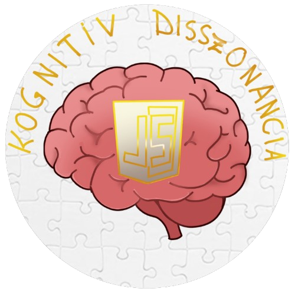

Üdvözlünk a weboldalunkon!

ebbe van az ido
Mi vagyunk a Kognitív Disszonancia, a Ceglédi SZC Közgazdasági és Informatikai Technikum 12-es évfolyamos szoftverfejlesztő csoport

ebbe van az ido
Mi vagyunk a Kognitív Disszonancia, a Ceglédi SZC Közgazdasági és Informatikai Technikum 12-es évfolyamos szoftverfejlesztő csoport